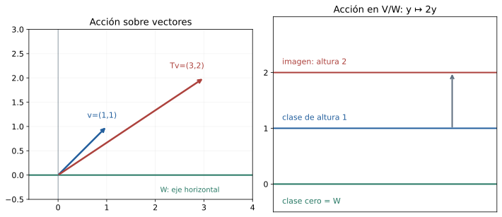
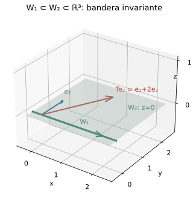
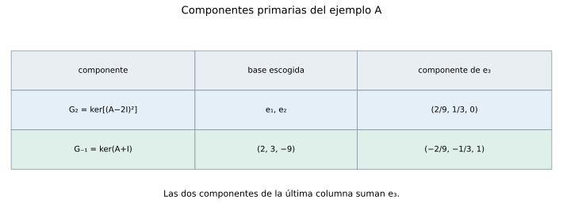
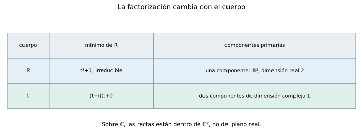
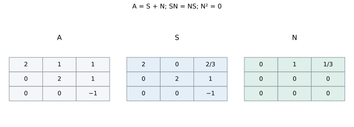

Capítulo 17. Subespacios invariantes, triangularización y formas canónicas
Álgebra para matemáticos · Tomo II
← Capítulo 16 · Índice del tomo II · Obra completa · Capítulo 18 →
El operador \(T(x,y)=(2x+y,2y)\) no tiene una base propia: su único espacio propio es el eje horizontal. Sin embargo, su acción no carece de organización. Ese eje permanece dentro de sí mismo, y dos entradas con la misma altura vuelven a tener la misma altura después de transformarse. La primera coordenada contiene la mezcla que impide diagonalizar; la segunda permite describir una acción que sigue estando definida cuando olvidamos la posición horizontal.
En la base usual, \(T\) tiene matriz \(\begin{pmatrix}2&1\\0&2\end{pmatrix}\). La entrada cero inferior significa que transformar un vector del primer eje no produce una componente en el segundo. La entrada uno superior expresa algo diferente: una entrada fuera del eje puede adquirir una componente en él. Conservar un subespacio permite estudiar la acción dentro de él y la acción restante sobre clases, aunque no podamos separar ambas mediante dos subespacios que se conserven por separado.

Trabajaremos sobre un cuerpo conmutativo \(\mathbb F\) y, salvo indicación contraria, en dimensión finita. Recuperamos los cocientes y bases adaptadas de C11, la representación de C12, el característico de C14, los polinomios de operadores y Bézout de C15, y la diagonalización de C16. La finalidad es encontrar componentes que el operador preserve y precisar qué información contienen. Los bloques obtenidos tendrán bases internas todavía libres: la expresión «formas canónicas» requiere distinguir esas componentes determinadas por el operador de las matrices concretas elegidas para representarlas.
17.1. Mantener una parte del espacio dentro de sí misma
Definición 17.1. Un subespacio \(W\subseteq V\) es invariante bajo \(T\), o \(T\)-invariante, si \(T(W)\subseteq W\). En ese caso, la restricción \(T_W:W\to W\) aplica la misma regla que \(T\), con dominio y codominio \(W\). El operador cociente se define por
\[ \overline T:V/W\longrightarrow V/W,\qquad \overline T(v+W)=T(v)+W. \]
La inclusión de invariancia puede ser estricta. El operador cero preserva todo subespacio, aunque envíe uno no nulo a \(\{0\}\). Una recta invariante está generada por un vector propio, según C14; en dimensión mayor, el operador puede mezclar las direcciones internas y seguir preservando el subespacio.
Proposición 17.1 (restricción y cociente). La regla para \(\overline T\) está bien definida si y sólo si \(W\) es invariante. Cuando lo es, \(T_W\) y \(\overline T\) son lineales, y para la proyección canónica \(\pi:V\to V/W\) se cumple \(\pi T=\overline T\pi\). Además, todo polinomio de \(T\) preserva \(W\), y su restricción y su operador cociente son \(p(T_W)\) y \(p(\overline T)\).
Demostración. Dos representantes \(v,v'\) dan la misma clase cuando \(v-v'\in W\). Sus imágenes dan la misma clase cuando \(T(v-v')\in W\). La invariancia garantiza esa implicación. Recíprocamente, si la regla está bien definida, para \(w\in W\) las entradas \(w\) y cero representan la misma clase, de modo que \(T(w)+W=W\) y \(T(w)\in W\). La linealidad procede de las operaciones de clases de C11 y de la linealidad de \(T\); la identidad con \(\pi\) es la propia fórmula aplicada a cada entrada.
La invariancia pasa de \(T\) a cada potencia por inducción y a combinaciones lineales por ser \(W\) subespacio. Restringir una composición de aplicaciones que preservan \(W\) equivale a componer sus restricciones. Asimismo, repetir la fórmula de clases da \(\overline T^{\,j}(v+W)=T^j(v)+W\). Sumar con los coeficientes de \(p\) prueba las dos afirmaciones de evaluación, incluido el término constante con la identidad de cada espacio. \(\square\)
En la apertura, \(W=\operatorname{span}e_1\). Dentro de \(W\), \(T\) multiplica por dos. Una clase de \(V/W\) está determinada por su altura \(y\), y \(\overline T\) también multiplica esa altura por dos. Las dos acciones son escalares, pero \(T\) no es escalar ni diagonalizable. La información sobre cómo una entrada exterior aporta una componente en \(W\) no aparece en esas dos acciones consideradas por separado.
No hay contradicción con la propiedad universal de C11. Para que una aplicación \(v+W\mapsto T(v)\) tenga valores en \(V\) y esté bien definida, se exige \(T(W)=0\). Aquí la salida también es una clase; basta que \(T(W)\) quede dentro de \(W\), pues esas diferencias desaparecen al pasar al cociente.
17.2. Los bloques que deja una base adaptada
Sea \((w_1,\ldots,w_k,u_1,\ldots,u_{n-k})\) una base cuyo primer bloque sea base de \(W\). Las imágenes de los primeros \(k\) vectores no tienen componentes en los restantes precisamente cuando \(W\) es invariante. Por tanto, la matriz toma la forma
\[ A=\begin{pmatrix}B&C\\0&D\end{pmatrix}. \]
El bloque \(B\) representa \(T_W\). Las clases \((u_1+W,\ldots,u_{n-k}+W)\) forman una base del cociente por C11, teorema 11.7, y el bloque \(D\) representa \(\overline T\) en ella. El bloque \(C\) registra las componentes en \(W\) de las imágenes de los vectores añadidos. Que \(D\) represente un operador sobre clases no obliga a que \(\operatorname{span}(u_1,\ldots,u_{n-k})\) sea invariante.
Proposición 17.2 (polinomios de los dos operadores inducidos). Para \(W\) invariante,
\[ \chi_T=\chi_{T_W}\chi_{\overline T},\qquad m_{T_W}\mid m_T,\qquad m_{\overline T}\mid m_T,\qquad m_T\mid m_{T_W}m_{\overline T}. \]
Se conservan los convenios \(\chi=m=1\) para un espacio cero.
Demostración. Aplicar el determinante triangular por bloques de C13 a \(tI-A\) da la primera igualdad. Si \(m_T(T)=0\), su restricción y su cociente son cero por 17.1; C15 implica que los dos mínimos dividen a \(m_T\).
Para la última divisibilidad, escribamos \(p=m_{T_W}\) y \(q=m_{\overline T}\). La igualdad \(q(\overline T)=0\) significa que \(q(T)v\in W\) para cada \(v\). Sobre esa imagen, \(p(T)\) actúa como \(p(T_W)=0\). Así, \(p(T)q(T)=0\), y \(m_T\mid pq\) por C15. El argumento se mantiene si uno de los espacios es cero: su identidad también es el operador cero, y el polinomio mínimo es uno. \(\square\)
Para el bloque \(\begin{pmatrix}2&1\\0&2\end{pmatrix}\), ambos mínimos inducidos son \(t-2\), mientras \(m_T=(t-2)^2\). No podemos reemplazar la última divisibilidad por una igualdad con el menor múltiplo común: el acoplamiento superior puede exigir repetir un factor. Si la matriz fuera \(2I_2\), los dos mínimos inducidos seguirían siendo \(t-2\), pero también el mínimo total sería \(t-2\).
17.3. El subespacio que genera una trayectoria
Si empezamos con \(v\) y exigimos que un subespacio que lo contenga sea invariante, ese subespacio debe contener también \(Tv,T^2v,\ldots\). El espacio generado por todos ellos es la elección más pequeña posible. C15 utilizó el caso en que una trayectoria ya daba una base de todo el espacio; podemos aplicar la misma idea a la parte alcanzada por una entrada cualquiera.
Definición 17.2. El subespacio cíclico generado por \(v\) es \(Z_T(v)=\operatorname{span}(v,Tv,T^2v,\ldots)\). Para \(v=0\) es el espacio cero.
Teorema 17.3 (base de una trayectoria). Si \(v\ne0\), existe un primer \(d\ge1\) tal que \(T^dv\) es combinación de \(v,Tv,\ldots,T^{d-1}v\). Esos \(d\) vectores forman una base de \(Z_T(v)\), que es invariante y mínimo entre los subespacios invariantes que contienen a \(v\). Si
\[ T^dv+a_{d-1}T^{d-1}v+\cdots+a_1Tv+a_0v=0, \]
entonces \(q_v(t)=t^d+a_{d-1}t^{d-1}+\cdots+a_0\) es el mínimo y el característico de \(T_{Z_T(v)}\). Un polinomio \(p\) satisface \(p(T)v=0\) si y sólo si \(q_v\mid p\).
Demostración. La finitud de dimensión fuerza una primera dependencia, y el primer término \(v\) no es cero. Por la elección de \(d\), los términos anteriores son independientes. Su generado \(Z\) se preserva: \(T\) envía cada término salvo el último al siguiente, y la relación expresa la imagen del último dentro de \(Z\). En consecuencia, todas las potencias posteriores aplicadas a \(v\) permanecen en \(Z\), que coincide con \(Z_T(v)\). Cualquier subespacio invariante que contenga a \(v\) contiene esa trayectoria entera.
La relación anula a \(v\) y también a cada \(T^jv\), porque \(q_v(T)\) conmuta con \(T^j\). Por tanto, anula la restricción entera. Un polinomio no nulo de grado menor que \(d\) no puede anular a \(v\), pues daría una dependencia entre la base indicada. Así, \(q_v\) es el mínimo. Esa base es una trayectoria de longitud igual a la dimensión de \(Z\), y C15, proposición 15.9, da que mínimo y característico de la restricción coinciden. Finalmente, dividir \(p\) entre \(q_v\) deja un resto de grado menor que \(d\); si \(p(T)v=0\), el resto también anula a \(v\) y debe ser cero. La implicación recíproca usa la regla del producto de evaluaciones. \(\square\)
En esa base, la matriz de la restricción tiene unos inmediatamente debajo de la diagonal y última columna \((-a_0,\ldots,-a_{d-1})^{\mathsf T}\); las demás entradas son cero. Se llama matriz compañera de \(q_v\). Para \(d=1\), es la matriz \((-a_0)\). Por ejemplo, si \(T(e_1)=e_2\), \(T(e_2)=e_3\) y \(T(e_3)=2e_1\), la trayectoria de \(e_1\) da la matriz \(\begin{pmatrix}0&0&2\\1&0&0\\0&1&0\end{pmatrix}\) y el polinomio \(t^3-2\) de C15. Encontrar subespacios cíclicos no demuestra todavía que podamos escogerlos como sumandos invariantes complementarios; esa afirmación exigiría otro teorema.
17.4. Una sucesión de subespacios que se conservan
Definición 17.3. Una bandera completa de \(V\), con \(\dim V=n\), es una sucesión \(0=W_0\subset W_1\subset\cdots\subset W_n=V\) con \(\dim W_j=j\). Es invariante si cada \(W_j\) lo es. Diremos que \(T\) es triangularizable sobre \(\mathbb F\) si tiene una matriz triangular superior en alguna base sobre ese cuerpo.
Proposición 17.4 (bandera y triangularidad). Una base \((v_1,\ldots,v_n)\) representa a \(T\) mediante una matriz triangular superior si y sólo si cada \(\operatorname{span}(v_1,\ldots,v_j)\) es invariante. Por tanto, \(T\) es triangularizable si y sólo si admite una bandera completa invariante.
Demostración. La matriz es triangular superior si y sólo si la columna \(j\) sólo usa las primeras \(j\) posiciones, es decir, si \(Tv_j\in\operatorname{span}(v_1,\ldots,v_j)\). Esas inclusiones implican por linealidad que cada generado inicial se preserve, y la invariancia de esos generados incluye las propias inclusiones. Si tenemos una bandera, escogemos sucesivamente \(v_j\in W_j\setminus W_{j-1}\); por las dimensiones, sus generados iniciales son los \(W_j\). La base resultante representa a \(T\) triangularmente. \(\square\)
La matriz
\[ A=\begin{pmatrix}2&1&1\\0&2&1\\0&0&-1\end{pmatrix} \]
preserva la recta \(\operatorname{span}e_1\) y el plano \(\operatorname{span}(e_1,e_2)\). El vector \(e_2\) no es propio: su imagen \(e_1+2e_2\) permanece en el plano, pero no en su propia recta. Una base triangular permite imágenes que utilicen vectores anteriores; una base diagonal sólo permite el vector de la misma posición.

Teorema 17.5 (criterio de triangularización). Son equivalentes: \(T\) es triangularizable sobre \(\mathbb F\); \(\chi_T\) se escinde sobre \(\mathbb F\); y \(m_T\) se escinde sobre \(\mathbb F\). Se permiten factores repetidos.
Demostración. Una matriz triangular tiene característico igual al producto de \(t\) menos sus entradas diagonales, por C13. Si el característico se escinde, también lo hace su divisor \(m_T\). En efecto, si \(dh=\prod_j(t-\alpha_j)\), evaluar en \(\alpha_1\) muestra que \(d\) o \(h\) tiene esa raíz. El teorema del factor permite extraer \(t-\alpha_1\) del factor correspondiente y cancelarlo en la igualdad. Una inducción sobre el número de factores prueba que \(d\) se escinde.
Probaremos que un mínimo escindido permite triangularizar por inducción sobre \(n=\dim V\). En dimensión cero la base vacía sirve. Si \(n>0\), el mínimo tiene grado positivo y, al escindirse, tiene una raíz \(\lambda\in\mathbb F\). C15 da un vector propio no nulo \(v_1\). La recta \(W=\operatorname{span}v_1\) es invariante, y el mínimo del operador cociente divide a \(m_T\) por 17.2; por tanto, también se escinde. La inducción da una base triangular del cociente. Elegimos representantes \(v_2,\ldots,v_n\) de sus vectores básicos; junto con \(v_1\) forman una base de \(V\) por C11. La condición triangular en clases significa que \(Tv_j\) difiere de una combinación de \(v_2,\ldots,v_j\) por un vector de \(W\). Así, \(Tv_j\in\operatorname{span}(v_1,\ldots,v_j)\) para todo \(j\), y 17.4 termina la prueba. \(\square\)
Sobre \(\mathbb C\), el TFA admitido en T1 §26.15 garantiza la escisión del característico, y todo operador de dimensión finita es triangularizable. Sobre \(\mathbb R\), una rotación de un cuarto de vuelta no lo es. El criterio de C16 exigía además que el mínimo no repitiera factores; la triangularización admite esa repetición.
17.5. Cuándo un complemento también se conserva
Supongamos \(V=W\oplus U\). Si ambos sumandos son invariantes, escoger una base en cada uno produce una matriz diagonal por bloques. Si sólo \(W\) lo es, puede quedar el bloque superior que ya vimos. La existencia de complementos como espacios vectoriales, probada en C11, no asegura que podamos eliminar ese bloque.
Proposición 17.6 (sumandos invariantes y proyecciones). En una suma directa finita \(V=\bigoplus_iW_i\), todos los sumandos son invariantes si y sólo si cada proyección de componentes \(E_i\) conmuta con \(T\). En tal caso, con \(T_i=T_{W_i}\),
\[ \chi_T=\prod_i\chi_{T_i},\qquad m_T=\operatorname{mcm}(m_{T_1},\ldots,m_{T_r}), \]
donde el menor múltiplo común se toma mónico.
Demostración. Si todos los sumandos se preservan y \(v=\sum_i v_i\), entonces \(TE_jv=Tv_j=E_jTv\), porque cada \(Tv_i\) permanece en su propio sumando. Recíprocamente, si \(TE_j=E_jT\) y \(w=E_jw\in W_j\), entonces \(Tw=E_jTw\in W_j\). La matriz en bases concatenadas es diagonal por bloques, y su determinante característico es el producto indicado.
Un polinomio anula a \(T\) si y sólo si anula cada restricción, pues toda entrada es suma de sus componentes. Por C15, esto equivale a ser múltiplo de cada \(m_{T_i}\). El único mónico de menor grado con esa propiedad es su menor múltiplo común, y por la definición del mínimo coincide con \(m_T\). \(\square\)
Para \(T(x,y)=(2x+y,2y)\) y \(W=\operatorname{span}e_1\), cualquier recta complementaria está generada por \(u=e_2+ce_1\). Su imagen es \(Tu=2u+e_1\). No puede ser múltiplo de \(u\), pues comparar la segunda coordenada fijaría el múltiplo en dos y dejaría el término no nulo \(e_1\). Ningún complemento de \(W\) es invariante. Aunque el operador cociente tenga dimensión uno, no podemos realizar su acción mediante una recta complementaria preservada dentro del plano.
17.6. Separar factores que no comparten divisores
El mínimo de la matriz \(A\) de §17.4 es \((t-2)^2(t+1)\) sobre \(\mathbb R\). El espacio propio de dos no alcanza a explicar todo el plano de las primeras coordenadas, pero el núcleo de \((A-2I)^2\) sí lo alcanza. El factor \(t+1\) describe otra componente, y Bézout permitirá separarlas porque no comparte divisor no constante con \((t-2)^2\).
Un polinomio no constante es irreducible sobre \(\mathbb F\) si no es producto de dos polinomios de grado positivo sobre ese cuerpo. Se normalizan sus coeficientes principales en uno. Para no exigir una teoría anterior de anillos, dejamos explícita la propiedad de factorización que usaremos.
Lema 17.7 (factores irreducibles y productos coprimos). Todo polinomio mónico no constante sobre \(\mathbb F\) es producto de irreducibles mónicos, de manera única salvo el orden. Si \(f_1,\ldots,f_r\) son coprimos por parejas y cada \(f_i\) divide a \(h\), entonces \(\prod_i f_i\) divide a \(h\). El menor múltiplo común mónico de varios polinomios no nulos se obtiene tomando el máximo exponente de cada factor irreducible.
Demostración. La existencia de una factorización procede por inducción sobre el grado: si el polinomio es irreducible, hemos terminado; si no, sus dos factores pueden normalizarse y tienen grados menores, de modo que se factorizan por inducción. Si un irreducible \(p\) divide a \(ab\) y no divide a \(a\), su máximo común divisor con \(a\) es uno: cualquier divisor no constante de \(p\) sería un múltiplo escalar de \(p\). Una identidad \(up+va=1\), multiplicada por \(b\), muestra entonces que \(p\mid b\). Por ello, si dos productos de irreducibles coinciden, el primer factor de uno divide algún factor del otro y, al ser mónicos irreducibles, ambos factores son iguales. Se cancelan en la igualdad y se repite, lo que prueba la unicidad.
Para dos polinomios coprimos \(f,g\), si \(h=fa\) y \(g\mid h\), Bézout aplicado a \(f,g\) da que \(g\mid a\), y por tanto \(fg\mid h\). La factorización muestra que el producto de cualquier subfamilia de los \(f_i\) sigue siendo coprimo con los restantes, de modo que una inducción prueba la afirmación general. Finalmente, ser múltiplo común equivale a tener para cada irreducible un exponente al menos tan grande como el de cualquiera de los polinomios dados. Tomar esos máximos produce el único mónico de menor grado y prueba la fórmula del menor múltiplo común. \(\square\)
Teorema 17.8 (núcleos de factores coprimos). Sean \(f_1,\ldots,f_r\) polinomios mónicos no constantes, coprimos por parejas, tales que \(q(T)=0\) para \(q=\prod_i f_i\). Entonces
\[ V=\bigoplus_{i=1}^r\ker f_i(T). \]
Los sumandos son invariantes. Si \(Q_i=q/f_i\) y se elige \(u_i\) con \(u_iQ_i+v_if_i=1\), la proyección sobre \(\ker f_i(T)\) es \(E_i=u_i(T)Q_i(T)\).
Demostración. El lema garantiza que \(Q_i\) y \(f_i\) son coprimos, así que Bézout proporciona la identidad indicada. Pongamos \(e_i=u_iQ_i\). Módulo \(f_i\), \(e_i\) difiere de uno por un múltiplo de \(f_i\); para \(j\ne i\), \(e_j\) es múltiplo de \(f_i\). Por tanto, cada \(f_i\) divide a \(1-\sum_j e_j\). Como son coprimos por parejas, su producto \(q\) divide a ese polinomio. Al evaluar obtenemos \(\sum_iE_i=I\).
Además, \(f_ie_i=u_iq\), de modo que \(f_i(T)E_i=0\) y \(E_i\) lleva cada entrada a \(\ker f_i(T)\). Esto prueba que los núcleos generan \(V\). Si \(w\in\ker f_i(T)\), la identidad de Bézout da \(E_iw=w\); si \(w\in\ker f_j(T)\) para \(j\ne i\), el factor \(f_j\) de \(e_i\) da \(E_iw=0\). Aplicar \(E_i\) a una relación \(\sum_jw_j=0\) entre esos núcleos obliga a \(w_i=0\) para cada \(i\). La suma es directa y los \(E_i\) son sus proyectores. Finalmente, \(f_i(T)\) conmuta con \(T\), así que \(f_i(T)w=0\) implica \(f_i(T)Tw=T f_i(T)w=0\); cada núcleo es invariante. \(\square\)
No se exige que cada factor sea lineal ni que \(q\) sea el mínimo. Si un factor resulta innecesario para anular a \(T\), su núcleo puede ser cero. Las proyecciones no dependen de los coeficientes de Bézout elegidos: cualquiera de esas elecciones conserva un sumando y anula los otros, y la descomposición directa fija esa acción de manera única.
Teorema 17.9 (descomposición primaria). Sea \(V\ne\{0\}\) y sea \(m_T=\prod_i p_i^{r_i}\) la factorización del mínimo en irreducibles mónicos distintos, con \(r_i\ge1\). Entonces los subespacios
\[ W_i=\ker p_i(T)^{r_i} \]
son no nulos, invariantes y satisfacen \(V=\bigoplus_iW_i\). El mínimo de \(T_{W_i}\) es exactamente \(p_i^{r_i}\). Los proyectores de esa suma son polinomios de \(T\).
Demostración. Las potencias de irreducibles distintos son coprimas por el lema. El teorema 17.8 se aplica a su producto \(m_T\) y da la suma y los proyectores. Por definición de \(W_i\), \(p_i(T)^{r_i}\) lo anula, por lo que el mínimo \(m_i\) de la restricción divide a \(p_i^{r_i}\); vale \(p_i^{s_i}\) con \(0\le s_i\le r_i\), admitiendo \(s_i=0\) si el espacio fuera cero. Como los sumandos son invariantes, 17.6 da \(m_T=\operatorname{mcm}(m_1,\ldots,m_r)=\prod_i p_i^{s_i}\). La unicidad de factorización obliga a \(s_i=r_i\) para cada \(i\). Así, los mínimos tienen la forma afirmada y ninguno de los espacios puede ser cero. \(\square\)
Estos subespacios se llaman componentes primarias. Están definidos como núcleos de polinomios determinados por \(T\), sin elegir una base. En bases concatenadas, la matriz queda diagonal por bloques, uno para cada irreducible. Cambiar una base dentro de un bloque modifica su matriz, pero no el subespacio que representa ni el mínimo de su restricción.
Para la matriz \(A\) de §17.4, sobre \(\mathbb R\) se obtiene
\[ W_2=\ker(A-2I)^2=\operatorname{span}(e_1,e_2),\qquad W_{-1}=\ker(A+I)=\operatorname{span}(2,3,-9). \]
Los dos sumandos son invariantes y complementarios. Al concatenar esas bases, la matriz es \(\operatorname{diag}(\begin{pmatrix}2&1\\0&2\end{pmatrix},-1)\). El tercer eje usual no era invariante; la nueva recta complementaria sí lo es. El proyector sobre \(W_{-1}\) es
\[ E_{-1}=\frac{(A-2I)^2}{9} =\begin{pmatrix}0&0&-2/9\\0&0&-1/3\\0&0&1\end{pmatrix}, \qquad E_2=I-E_{-1}. \]
La fórmula actúa como cero en \(W_2\) y como uno en \(W_{-1}\) porque allí \(A-2I\) multiplica por menos tres. Para \(e_3\), las dos componentes son \((2/9,1/3,0)\) y \((-2/9,-1/3,1)\), cuya suma es \(e_3\).

Sobre \(\mathbb R\), una rotación \(R\) de un cuarto de vuelta tiene mínimo irreducible \(t^2+1\), así que toda \(\mathbb R^2\) constituye una sola componente primaria. La descomposición no obliga a producir rectas reales que no existen. Sobre \(\mathbb C\), el mismo mínimo se factoriza como \((t-i)(t+i)\) y aparecen dos componentes lineales. El cuerpo interviene tanto en la triangularización como en los factores con los que se organiza la descomposición primaria.

17.7. La parte que queda cuando sólo hay una raíz
Definición 17.4. Un operador \(N\) es nilpotente si \(N^r=0\) para algún entero \(r\ge1\). En un espacio no nulo, su índice de nilpotencia es el menor de esos enteros. El operador cero tiene índice uno en dimensión positiva.
Proposición 17.10 (criterios de nilpotencia). En dimensión \(n\ge1\), son equivalentes: \(N\) es nilpotente; \(m_N=t^r\) para algún \(1\le r\le n\); y \(\chi_N=t^n\). El exponente \(r\) es su índice. Existe una base triangular con diagonal cero y siempre \(N^n=0\).
Demostración. Si \(N^k=0\), el mínimo divide a \(t^k\) por C15, así que es una potencia \(t^r\), con \(r\ge1\). La cota \(r\le n\) procede de Cayley–Hamilton. Ese mínimo se escinde, de modo que 17.5 da una matriz triangular. Sus entradas diagonales son valores propios y por C15 son raíces del mínimo; todas son cero. Su característico es entonces \(t^n\). Recíprocamente, si el característico es \(t^n\), Cayley–Hamilton da \(N^n=0\). Finalmente, el criterio de divisibilidad muestra que \(t^j\) anula a \(N\) exactamente cuando \(j\ge r\), lo que identifica el índice. \(\square\)
Tener sólo cero como valor propio no implica nilpotencia si el característico no se escinde. Sobre \(\mathbb R\), \(\operatorname{diag}(0,R)\) tiene cero como único valor propio real y no es nilpotente, porque sus potencias mantienen el bloque invertible \(R^k\). Lo que debe ser una potencia de \(t\) es el mínimo o el característico, no sólo la lista de raíces que vemos dentro del cuerpo.
Corolario 17.11 (componentes cuando el característico se escinde). Supongamos \(\chi_T=\prod_i(t-\lambda_i)^{a_i}\) con valores distintos. Si \(m_T=\prod_i(t-\lambda_i)^{r_i}\), entonces
\[ G_{\lambda_i}=\ker(T-\lambda_iI)^{r_i} =\ker(T-\lambda_iI)^{a_i} =\ker(T-\lambda_iI)^n \]
es la componente primaria de \(\lambda_i\) y tiene dimensión \(a_i\). En ella, \(T=\lambda_iI+N_i\), donde \(N_i\) es nilpotente de índice \(r_i\). Los \(G_{\lambda_i}\) se llaman espacios propios generalizados.
Demostración. C15 da \(1\le r_i\le a_i\le n\). La descomposición primaria entrega la suma directa de los primeros núcleos y el mínimo \((t-\lambda_i)^{r_i}\) de cada restricción. Trasladar la variable muestra que el mínimo de \(N_i=T_{G_{\lambda_i}}-\lambda_iI\) es \(t^{r_i}\): \(h(N_i)=0\) equivale a que \(h(t-\lambda_i)\) sea múltiplo de ese mínimo de la restricción; al poner \(u=t-\lambda_i\), esto equivale a \(u^{r_i}\mid h(u)\). Por 17.10, \(N_i\) es nilpotente de índice \(r_i\).
Sobre otra componente \(G_{\lambda_j}\), \(T-\lambda_iI\) es invertible: los polinomios \(t-\lambda_i\) y \((t-\lambda_j)^{r_j}\) son coprimos, y el criterio de C15 se aplica a la restricción. Ninguna potencia de ese operador anula un vector no nulo en ese otro sumando. Sobre la propia componente, toda potencia de exponente al menos \(r_i\) es cero. La descomposición directa prueba por tanto la igualdad de los tres núcleos.
La triangularización de \(N_i\) con diagonal cero hace que el característico de la restricción de \(T\) a \(G_{\lambda_i}\) sea \((t-\lambda_i)^{\dim G_{\lambda_i}}\). Multiplicar esos característicos por 17.6 y comparar con \(\chi_T\) obliga a \(\dim G_{\lambda_i}=a_i\). \(\square\)
El espacio propio ordinario es el núcleo de la primera potencia y puede ser menor. En el ejemplo de \(A\), \(E_2=\operatorname{span}e_1\) tiene dimensión uno, mientras \(G_2=\operatorname{span}(e_1,e_2)\) tiene dimensión dos, igual a la multiplicidad algebraica. La nilpotencia mide la acción residual de \(T-2I\) dentro de esa componente. Esta reducción proporciona bloques asociados a una sola raíz, sin fijar todavía una base para su parte nilpotente.
17.8. Separar una acción diagonalizable y una nilpotente
Los proyectores primarios son polinomios de \(T\). Por eso conmutan con todo operador que conmute con \(T\), y sus imágenes también son invariantes para esos operadores: si \(ST=TS\), entonces \(p_i(T)^{r_i}Sw=S p_i(T)^{r_i}w=0\) para \(w\in W_i\). Las componentes primarias no dependen de las bases ni de los coeficientes de Bézout escogidos. Cuando los factores son lineales, permiten separar dos acciones de \(T\) sobre todo el espacio.
Teorema 17.12 (parte diagonalizable y parte nilpotente). Si \(m_T\) se escinde sobre \(\mathbb F\), existen únicos operadores \(S,N\) tales que \(T=S+N\), \(S\) es diagonalizable sobre \(\mathbb F\), \(N\) es nilpotente y \(SN=NS\). Ambos son polinomios de \(T\). Si \(E_i\) son los proyectores de sus componentes primarias, entonces
\[ S=\sum_i\lambda_iE_i,\qquad N=T-S. \]
Demostración. Si \(V=\{0\}\), ambos operadores son cero y las afirmaciones se cumplen. Supongamos \(V\ne\{0\}\). Por 17.5 también se escinde el característico, de modo que se aplica 17.11. En cada \(G_{\lambda_i}\), la fórmula hace que \(S\) sea la multiplicación por \(\lambda_i\) y que \(N\) sea la parte nilpotente \(N_i\) de 17.11. Concatenar bases arbitrarias de esas componentes diagonaliza \(S\). Si \(r=\max_i r_i\), \(N^r=0\) en cada sumando y por tanto en todo \(V\). Los proyectores son polinomios de \(T\), de modo que también lo son \(S,N\), y conmutan.
Para la unicidad, supongamos otra escritura \(T=S'+N'\) con las mismas propiedades. Como \(S'\) y \(N'\) conmutan entre sí, ambos conmutan con \(T\), y por ello con sus polinomios \(S,N\). En particular, \(S\) y \(S'\) son diagonalizables conmutantes; C16 da una base común, en la cual \(S-S'\) es diagonal. A su vez, \(N\) y \(N'\) conmutan y son nilpotentes. Si \(N^a=0\) y \((N')^b=0\), el desarrollo binomial de \((N'-N)^{a+b-1}\) se anula: cada término contiene una potencia de \(N\) al menos \(a\) o una de \(N'\) al menos \(b\). Así, \(N'-N\) es nilpotente. La igualdad \(S-S'=N'-N\) dice que el mismo operador es diagonalizable y nilpotente; todas las entradas de su diagonal deben ser cero, de modo que es cero. Se obtiene \(S=S'\) y luego \(N=N'\). \(\square\)
Para la matriz \(A\) que hemos seguido,
\[ S=2I-3E_{-1}=\begin{pmatrix}2&0&2/3\\0&2&1\\0&0&-1\end{pmatrix},\qquad N=\begin{pmatrix}0&1&1/3\\0&0&0\\0&0&0\end{pmatrix}. \]
Se verifica \(S+N=A\), \(N^2=0\) y \(SN=NS\). La parte diagonalizable no es, en las coordenadas usuales, la matriz que se obtiene borrando las entradas fuera de la diagonal de \(A\): esa operación no conservaría necesariamente la conmutación. Aquí la fórmula por componentes fija la parte escalar de la acción en cada espacio propio generalizado y deja en \(N\) la acción residual que recorre sus direcciones.

La componente de dos conserva una dirección en la que \(T-2I\) todavía actúa y otra en la que ya se anula. Separarla de la componente de menos uno ha permitido aislar esa dificultad sin borrarla. Las componentes y los operadores \(S,N\) quedan determinados; la elección de coordenadas dentro de la parte nilpotente permanece abierta.
17.9. Ejercicios
Los ejemplos numéricos se trabajan sobre \(\mathbb R\) salvo indicación contraria. Las preguntas generales se entienden en dimensión finita; cuando aparezca un índice de nilpotencia o una factorización no vacía del mínimo, el espacio es no nulo. Toda fórmula sobre clases debe comprobarse con independencia del representante. Las matrices de restricción y cociente deben indicar sus bases.
Ejercicio 1 — Comprobar invariancia. Para \(A=\begin{pmatrix}2&1&1\\0&2&1\\0&0&-1\end{pmatrix}\), decide si se preservan \(\operatorname{span}e_1\), \(\operatorname{span}(e_1,e_2)\) y \(\operatorname{span}e_3\).
Ejercicio 2 — Calcular dentro y módulo una recta. Para \(T(x,y)=(2x+y,2y)\) y \(W=\operatorname{span}e_1\), calcula las matrices de \(T_W\) y \(\overline T\) en las bases \((e_1)\) y \((e_2+W)\).
Ejercicio 3 — Una fórmula de clases que falla. Sea \(S(x,y)=(y,x)\) y \(W=\operatorname{span}e_1\). ¿Define \(v+W\mapsto S(v)+W\) un operador en \(\mathbb R^2/W\)?
Ejercicio 4 — Los bloques de una base adaptada. Para \(A\) del ejercicio 1 y \(W=\operatorname{span}(e_1,e_2)\), encuentra las matrices de restricción y cociente, sus característicos y sus mínimos.
Ejercicio 5 — Un producto que no es el mínimo. Para \(T=2I_2\) y \(W=\operatorname{span}e_1\), compara \(m_T\) con \(m_{T_W}m_{\overline T}\).
Ejercicio 6 — Un complemento que no puede conservarse. Prueba que \(W=\operatorname{span}e_1\) no tiene complemento invariante para \(T(x,y)=(2x+y,2y)\).
Ejercicio 7 — Un complemento invariante que sí existe. Para \(A=\begin{pmatrix}2&1\\0&3\end{pmatrix}\) y \(W=\operatorname{span}e_1\), encuentra un complemento invariante y explica qué ocurre con el bloque de acoplamiento.
Ejercicio 8 — Una trayectoria que sólo alcanza un plano. Para \(T=\operatorname{diag}(1,2,3)\) y \(v=(1,1,0)\), encuentra \(Z_T(v)\), su base de trayectoria y \(q_v\). Compáralo con \(m_T\).
Ejercicio 9 — Una trayectoria que alcanza todo el espacio. Para el mismo \(T\) y \(v=(1,1,1)\), prueba que \(Z_T(v)=\mathbb R^3\) y encuentra su polinomio de relación mínima.
Ejercicio 10 — Un polinomio como entrada cíclica. En \(P_2(\mathbb R)\), sea \(D\) la derivación formal y \(v=t^2\). Encuentra la base de trayectoria y la matriz de la restricción a su subespacio cíclico.
Ejercicio 11 — Leer una bandera desde una matriz. Para \(N=\begin{pmatrix}0&1&0\\0&0&1\\0&0&0\end{pmatrix}\), exhibe una bandera completa invariante. ¿Son propios todos los vectores de la base usual?
Ejercicio 12 — Construir una base triangular. Sea \(T(x,y,z)=(y,0,x)\). Encuentra una bandera completa invariante y una base triangular superior.
Ejercicio 13 — El cuerpo y la bandera. Para la rotación real \(R=\begin{pmatrix}0&-1\\1&0\end{pmatrix}\), decide si existe una bandera completa invariante sobre \(\mathbb R\) y sobre \(\mathbb C\).
Ejercicio 14 — Un único valor real que no controla las potencias. Para \(A=\operatorname{diag}(0,R)\), con la rotación del ejercicio 13, encuentra el espectro real, el mínimo y decide si es nilpotente.
Ejercicio 15 — Triangularizar sin diagonalizar. Da un operador triangularizable cuyo mínimo tenga grado tres y que no sea diagonalizable. Justifica ambas conclusiones desde el mínimo.
Ejercicio 16 — Una base triangular de un operador diagonalizable. ¿Puede un operador diagonalizable tener una matriz triangular no diagonal en otra base? Da un ejemplo e identifica la diferencia entre ambas afirmaciones.
Ejercicio 17 — Un vector propio del cociente que no se levanta. Para \(T(x,y)=(2x+y,2y)\) y \(W=\operatorname{span}e_1\), la clase \(e_2+W\) es propia de \(\overline T\). ¿Existe algún representante de ella que sea propio de \(T\)?
Ejercicio 18 — Acotar un mínimo por dos operadores inducidos. Si \(m_{T_W}=m_{\overline T}=t-a\), demuestra que \(m_T\) sólo puede ser \(t-a\) o \((t-a)^2\) en dimensión positiva. Realiza las dos posibilidades en dimensión dos.
Ejercicio 19 — Bloques repetidos y mínimo. Para \(A=\operatorname{diag}(R,R)\) sobre \(\mathbb R\), calcula característico, mínimo y descomposición primaria. ¿Coinciden sus dos bloques visibles con dos componentes primarias distintas?
Ejercicio 20 — Núcleos, imágenes y conmutación. Si \(ST=TS\), demuestra que \(\ker S\) e \(\operatorname{im}S\) son invariantes bajo \(T\). Aplica el resultado a \(S=p(T)\).
Ejercicio 21 — Preservar la imagen no basta. Para \(T=\begin{pmatrix}2&1\\0&2\end{pmatrix}\) y \(E=\operatorname{diag}(1,0)\), comprueba que \(T\) preserva \(\operatorname{im}E\) pero \(TE\ne ET\). ¿Qué condición falta?
Ejercicio 22 — Bézout con una raíz doble. Encuentra una identidad de Bézout entre \((t-2)^2\) y \(t+1\). Úsala para obtener los dos proyectores del ejemplo A del capítulo.
Ejercicio 23 — Una base de componentes primarias. Para \(A\) del ejercicio 1, calcula \(G_2,G_{-1}\) y verifica la matriz en la base \(e_1,e_2,(2,3,-9)\).
Ejercicio 24 — Comparar el primer núcleo y el segundo. Para el mismo A, calcula \(\ker(A-2I)\) y \(\ker(A-2I)^2\) y explica por qué sus dimensiones miden informaciones diferentes.
Ejercicio 25 — Un factor anulador innecesario. Para \(T=2I_3\), aplica 17.8 al polinomio \((t-2)(t-3)\). Determina los dos núcleos y explica la diferencia con 17.9.
Ejercicio 26 — Qué ocurre sin coprimalidad. Para \(N=\begin{pmatrix}0&1\\0&0\end{pmatrix}\), toma \(f=g=t\). Aunque \((fg)(N)=0\), ¿se obtiene \(V=\ker f(N)\oplus\ker g(N)\)?
Ejercicio 27 — Una componente irreducible real. Sea \(A=\operatorname{diag}(R,2)\) sobre \(\mathbb R\). Encuentra su descomposición primaria y decide si puede triangularizarse sobre ese cuerpo.
Ejercicio 28 — Un irreducible sobre un cuerpo finito. En \(\mathbb F_2\), estudia \(A=\begin{pmatrix}0&1\\1&1\end{pmatrix}\). Determina mínimo, componentes primarias y triangularizabilidad. Calcula \(A^3\).
Ejercicio 29 — Índice de nilpotencia. Para \(N(x,y,z)=(y,z,0)\), encuentra su índice, su mínimo y su característico. Repite para el operador cero en dimensión tres.
Ejercicio 30 — Cuando dejan de crecer los núcleos. Si \(\ker T^j=\ker T^{j+1}\) para algún \(j\ge1\), prueba que todos los núcleos posteriores son iguales. Si T es nilpotente, ¿qué implica esa igualdad?
Ejercicio 31 — Dimensiones ordinarias y generalizadas. Para \(A=\begin{pmatrix}2&1&0&0\\0&2&0&0\\0&0&2&0\\0&0&0&-1\end{pmatrix}\), encuentra \(E_2,G_2,G_{-1}\) y sus dimensiones. Relaciona cada dimensión con una multiplicidad.
Ejercicio 32 — Una descomposición heredada por un subespacio. Si W es T-invariante y \(V=\bigoplus_iW_i\) es la descomposición primaria de T, demuestra \(W=\bigoplus_i(W\cap W_i)\).
Ejercicio 33 — Invertir fuera de una componente. Sobre la componente \(G_4\) supón que \(T=4I+N\) y \(N^3=0\). Encuentra la inversa de \(T-I\) y verifica por qué ningún vector no nulo de \(G_4\) puede pertenecer a \(\ker(T-I)^k\).
Ejercicio 34 — Independencia de una identidad de Bézout. En 17.8, demuestra que dos elecciones de \(u_i\) producen el mismo proyector. Prueba también que \(e_i^2-e_i\) es múltiplo de q, donde \(e_i=u_iQ_i\).
Ejercicio 35 — Los polinomios de las dos partes. Si \(m_T=\prod_i(t-\lambda_i)^{r_i}\) en dimensión positiva y \(T=S+N\) es la descomposición de 17.12, determina \(m_S\) y el índice de N.
Ejercicio 36 — Promediar para obtener un complemento invariante. Supón \(T^2=I\), característica distinta de dos y W invariante. Sea P cualquier proyector con imagen W. Demuestra que \(E=(P+TPT)/2\) es un proyector con imagen W que conmuta con T, y deduce la existencia de un complemento invariante.
Ejercicio 37 — Triangularizar dos operadores complejos. Si S y T son operadores complejos conmutantes, demuestra que existe una misma base en la que ambos son triangulares superiores, aunque no sean diagonalizables.
Ejercicio 38 — Encontrar una recta dentro de un subespacio. Sea W un subespacio complejo no nulo preservado por T. Demuestra que W contiene una recta invariante. ¿Vale sobre \(\mathbb R\)?
Ejercicio 39 — La conmutación y la unicidad de las partes. Muestra que la unicidad de la escritura \(T=S+N\), con S diagonalizable y N nilpotente, puede fallar si se omite \(SN=NS\). Usa \(T=\operatorname{diag}(1,2)\).
Ejercicio 40 — Dos componentes con acción residual. Sea \(A=\begin{pmatrix}2&1&1&0\\0&2&1&0\\0&0&-1&1\\0&0&0&-1\end{pmatrix}\). Encuentra su mínimo y sus componentes primarias. Verifica que \(E=(A-2I)^2(2A+5I)/27\) proyecta sobre la componente de menos uno y calcula \(S=2I-3E\) y \(N=A-S\).
17.10. Soluciones
Solución 1. Las imágenes son \(Ae_1=2e_1\), \(Ae_2=e_1+2e_2\) y \(Ae_3=e_1+e_2-e_3\). La primera recta y el plano de las primeras coordenadas se preservan porque las imágenes de sus generadores permanecen en ellos. La tercera recta no se preserva: \(Ae_3\) tiene componentes no nulas en \(e_1\) y \(e_2\). Basta comprobar generadores por linealidad; una imagen que salga del subespacio basta para refutar la invariancia.
Solución 2. La restricción satisface \(T(e_1)=2e_1\), así que su matriz es \((2)\). En el cociente, \(T(e_2)+W=e_1+2e_2+W=2(e_2+W)\), y su matriz también es \((2)\). Para un representante \(e_2+ce_1\), la imagen es \(2e_2+(1+2c)e_1\) y su clase sigue siendo \(2e_2+W\). Esto comprueba directamente que la primera coordenada elegida no cambia el resultado en clases.
Solución 3. No. Los vectores cero y \(e_1\) representan la misma clase, pero sus imágenes son cero y \(e_2\), cuyas clases son diferentes porque \(e_2\notin W\). La causa es \(S(W)\not\subseteq W\). La linealidad de \(S\) no garantiza por sí sola que la regla respete la identificación de representantes.
Solución 4. En la base \((e_1,e_2)\), la restricción tiene matriz \(B=\begin{pmatrix}2&1\\0&2\end{pmatrix}\), con característico y mínimo \((t-2)^2\): \(B-2I\) es no nula y su cuadrado es cero. En la base \((e_3+W)\), el cociente tiene matriz \((-1)\), con característico y mínimo \(t+1\). El característico total es su producto. Los dos mínimos son coprimos y ambos dividen al mínimo total, mientras su producto lo anula por 17.2; luego \(m_A=(t-2)^2(t+1)\).
Solución 5. Los tres operadores son multiplicación por dos en sus respectivos espacios no nulos. Por tanto, los tres mínimos son \(t-2\). El producto de los dos mínimos inducidos es \((t-2)^2\), que anula a \(T\) pero no es su mínimo. La divisibilidad de 17.2 puede ser estricta; cuando hay una suma directa invariante, el mínimo se obtiene por menor múltiplo común.
Solución 6. Cualquier recta complementaria tiene un generador con segunda coordenada no nula; al normalizarlo queda \(u=(c,1)=e_2+ce_1\). Se tiene \(Tu=2u+e_1\). Si la recta fuera invariante, \(Tu=au\) para algún escalar. La segunda coordenada obliga a \(a=2\), y la primera dejaría \(e_1=0\), contradicción. Los complementos como espacios vectoriales existen, pero ninguno satisface aquí la condición adicional de invariancia.
Solución 7. La recta \(U=\operatorname{span}(1,1)\) es propia de valor tres y complementa a \(W\). En la base \(e_1,(1,1)\) la matriz es \(\operatorname{diag}(2,3)\), sin bloque de acoplamiento. El complemento usual \(\operatorname{span}e_2\) no era invariante, porque \(Ae_2=(1,3)\). El bloque superior depende de la elección del complemento; aquí puede eliminarse porque existe una elección preservada.
Solución 8. Los vectores \(v=(1,1,0)\) y \(Tv=(1,2,0)\) son independientes y generan el plano \(z=0\). La siguiente imagen es \((1,4,0)=3Tv-2v\), por lo que \(q_v=t^2-3t+2=(t-1)(t-2)\). El plano se preserva y contiene la trayectoria entera. El mínimo total es \((t-1)(t-2)(t-3)\); el factor de tres no aparece en esa entrada. La matriz de la restricción en la base de trayectoria es \(\begin{pmatrix}0&-2\\1&3\end{pmatrix}\), con mínimo y característico \(q_v\).
Solución 9. Las columnas \(v,Tv,T^2v\) forman \(P=\begin{pmatrix}1&1&1\\1&2&4\\1&3&9\end{pmatrix}\), cuyo determinante es dos. Son una base y la trayectoria alcanza todo el espacio. El característico y el mínimo coinciden por 17.3, y ambos son \((t-1)(t-2)(t-3)=t^3-6t^2+11t-6\). En particular, \(T^3v=6T^2v-11Tv+6v\). Ninguna relación de menor grado puede existir por la independencia de las tres columnas.
Solución 10. La trayectoria comienza \(t^2,2t,2,0\). Los tres términos no nulos son independientes, pues tienen grados distintos y coeficientes principales no nulos; generan todo \(P_2(\mathbb R)\). La primera relación es \(D^3v=0\), así que \(q_v=t^3\). En la base \((t^2,2t,2)\), las imágenes son el segundo vector, el tercero y cero, y la matriz es \(\begin{pmatrix}0&0&0\\1&0&0\\0&1&0\end{pmatrix}\). Esa matriz es triangular inferior en este orden; invertir el orden de la base la hace triangular superior. El teorema cíclico no exige que su orden de trayectoria sea ya el de una bandera superior.
Solución 11. La bandera es \(0\subset\operatorname{span}e_1\subset\operatorname{span}(e_1,e_2)\subset\mathbb R^3\). Las imágenes \(Ne_1=0\), \(Ne_2=e_1\) y \(Ne_3=e_2\) prueban la invariancia de cada generado inicial. Sólo \(e_1\) es propio entre los tres vectores usuales, con valor cero; las otras dos imágenes no son múltiplos de su entrada. Una base triangular no tiene por qué ser una base propia.
Solución 12. Se tiene \(Te_2=e_1\), \(Te_1=e_3\) y \(Te_3=0\). La bandera \(0\subset\operatorname{span}e_3\subset\operatorname{span}(e_3,e_1)\subset V\) se preserva. En la base \((e_3,e_1,e_2)\), las columnas de las imágenes son cero, la primera columna básica y la segunda, de modo que \([T]=\begin{pmatrix}0&1&0\\0&0&1\\0&0&0\end{pmatrix}\). El orden se eligió para que cada imagen usara sólo posiciones anteriores.
Solución 13. Una bandera completa en dimensión dos exige una recta invariante. Sobre \(\mathbb R\), \(t^2+1\) no tiene raíces y no hay vectores propios, por lo que no existe tal recta. Sobre \(\mathbb C\), \((1,-i)\) es propio de valor \(i\) y su recta inicia una bandera; al añadir \((1,i)\) se obtiene incluso una base diagonal. La escisión determina la posibilidad de triangularizar y no sólo la de diagonalizar.
Solución 14. El bloque cero de dimensión uno tiene mínimo \(t\) y el bloque de rotación mínimo \(t^2+1\). Por suma directa invariante, \(m_A=t(t^2+1)\); los factores son coprimos. El único valor propio real es cero, pero \(A\) no es nilpotente: para toda potencia positiva el bloque \(R^k\) permanece invertible. El característico es también \(t(t^2+1)\) y no se escinde sobre \(\mathbb R\). La lista de raíces reales no describe los factores irreducibles restantes.
Solución 15. Sirve \(N\) del ejercicio 11. Se tiene \(N^3=0\) y \(N^2e_3=e_1\ne0\), de modo que \(m_N=t^3\). Ese polinomio se escinde sobre cualquier cuerpo, así que el operador es triangularizable. Repite un factor lineal, por lo que el criterio de C16 impide diagonalizarlo. La matriz usual ya exhibe triangularidad superior.
Solución 16. La matriz \(A=\begin{pmatrix}2&1\\0&3\end{pmatrix}\) es triangular y no diagonal en la base usual, pero sus valores distintos garantizan diagonalización en la base \((1,0),(1,1)\). La primera afirmación se refiere a una representación escogida; la segunda afirma que existe alguna base con representación diagonal. La entrada superior no nula en una base arbitraria no basta para descartar la diagonalizabilidad.
Solución 17. Todos sus representantes son \(u=e_2+ce_1\). La ecuación \(Tu=2u+e_1\) muestra que ninguno es propio de valor dos. Tampoco puede tener otro valor: la segunda coordenada de \(Tu\) es dos y la de \(u\) es uno, así que cualquier valor propio asociado tendría que ser dos. La ecuación propia en el cociente permite una diferencia en \(W\), mientras que la ecuación en \(V\) exige que esa diferencia sea cero.
Solución 18. Por 17.2, \(t-a\) divide a \(m_T\) y \(m_T\) divide a \((t-a)^2\). Los divisores mónicos intermedios son exactamente los dos indicados. La matriz \(aI_2\) realiza el primero. La matriz \(\begin{pmatrix}a&1\\0&a\end{pmatrix}\) realiza el segundo porque su diferencia con \(aI\) es no nula y tiene cuadrado cero. En ambos ejemplos, \(W=\operatorname{span}e_1\) produce las dos acciones inducidas escalares requeridas.
Solución 19. Cada bloque tiene característico y mínimo \(t^2+1\). El característico total es \((t^2+1)^2\) y el mínimo es el menor múltiplo común, \(t^2+1\). Como éste tiene un solo irreducible, la descomposición primaria tiene una única componente: todo \(\mathbb R^4\). Los dos planos de los bloques son sumandos invariantes, pero no componentes primarias diferentes. La descomposición primaria agrupa todo lo asociado a un mismo irreducible y puede admitir divisiones invariantes internas.
Solución 20. Si \(Sw=0\), entonces \(S(Tw)=T(Sw)=0\), por lo que \(Tw\in\ker S\). Si \(w=Su\), entonces \(Tw=TSu=STu\in\operatorname{im}S\). Los polinomios de \(T\) conmutan con \(T\) por C15, así que sus núcleos e imágenes se preservan. Este argumento explica directamente la invariancia de los núcleos que aparecen en la descomposición primaria.
Solución 21. La imagen de \(E\) es \(\operatorname{span}e_1\), que se preserva porque \(Te_1=2e_1\). Sin embargo, \(TE=\begin{pmatrix}2&0\\0&0\end{pmatrix}\) y \(ET=\begin{pmatrix}2&1\\0&0\end{pmatrix}\). El núcleo de \(E\) es \(\operatorname{span}e_2\) y no se preserva. Para que la proyección conmute se necesita que también se conserve el otro sumando, según 17.6.
Solución 22. Expandir muestra \((t-2)^2+(5-t)(t+1)=9\). Dividir por nueve da \(1=(t-2)^2/9+(5-t)(t+1)/9\). El primer término se anula en la componente de dos y vale uno en la de menos uno, de modo que \(E_{-1}=(A-2I)^2/9\). El segundo produce \(E_2=(5I-A)(A+I)/9=I-E_{-1}\). En cada caso se verifica la acción conservando su propio núcleo y anulando el otro, como prescribe 17.8.
Solución 23. La matriz \((A-2I)^2=\begin{pmatrix}0&0&-2\\0&0&-3\\0&0&9\end{pmatrix}\) tiene núcleo \(z=0\), así que \(G_2=\operatorname{span}(e_1,e_2)\). Resolver \((A+I)v=0\) da la recta \(G_{-1}=\operatorname{span}(2,3,-9)\). Las columnas de \(P=\begin{pmatrix}1&0&2\\0&1&3\\0&0&-9\end{pmatrix}\) forman una base, con determinante menos nueve. Las imágenes de esas columnas son \(2e_1\), \(e_1+2e_2\) y menos la tercera columna, de modo que \(P^{-1}AP=\operatorname{diag}(\begin{pmatrix}2&1\\0&2\end{pmatrix},-1)\). El bloque de dos permanece no diagonal.
Solución 24. Las ecuaciones de \((A-2I)v=0\) fuerzan primero \(z=0\) y después \(y=0\), así que el núcleo es \(\operatorname{span}e_1\), de dimensión uno. El segundo núcleo es el plano \(z=0\), de dimensión dos, por el ejercicio 23. El primero cuenta vectores propios independientes; el segundo recupera la componente primaria completa de dos, cuya dimensión es su multiplicidad algebraica. No todos sus vectores son propios: \((A-2I)e_2=e_1\ne0\).
Solución 25. El núcleo de \(T-2I\) es todo el espacio; \(T-3I=-I\) es invertible y su núcleo es cero. La suma directa es \(V\oplus\{0\}\) y los proyectores son \(I\) y cero. El polinomio dado anula, pero no es el mínimo, que es \(t-2\). El teorema 17.8 permite factores redundantes y sumandos cero; 17.9 usa exactamente los factores del mínimo y garantiza componentes no nulas.
Solución 26. No. Ambos núcleos son la misma recta \(\operatorname{span}e_1\). Su suma sigue siendo esa recta y no cubre el plano; además, no es directa porque su intersección es no nula. La identidad \(N^2=0\) no separa dos factores iguales mediante Bézout: \(t\) y \(t\) tienen máximo común divisor \(t\). El teorema requiere coprimalidad por parejas.
Solución 27. El mínimo es \((t^2+1)(t-2)\) porque es el menor múltiplo común de los mínimos de los bloques. Sus factores son irreducibles distintos sobre \(\mathbb R\). La componente de \(t^2+1\) es el plano de las primeras dos coordenadas, y la de \(t-2\) es la tercera recta: sobre el otro bloque cada factor evaluado es invertible. No puede triangularizarse sobre \(\mathbb R\) porque el mínimo no se escinde en factores lineales. Una forma diagonal por bloques no implica una forma triangular por escalares.
Solución 28. El polinomio \(p=t^2+t+1\) no tiene raíces en cero ni en uno y, siendo cuadrático, es irreducible. Se verifica \(A^2=A+I\), así que p anula a A; la matriz no es escalar y su mínimo es p. Hay una sola componente primaria, todo el plano. No se triangulariza sobre \(\mathbb F_2\) porque p no se escinde allí. Multiplicar la relación por A da \(A^3=A^2+A=I\) en característica dos. Tener orden finito como operador invertible no asegura valores propios en el cuerpo.
Solución 29. Las potencias actúan como \(N^2(x,y,z)=(z,0,0)\) y \(N^3=0\). Puesto que \(N^2e_3=e_1\ne0\), el índice es tres, el mínimo \(t^3\) y el característico \(t^3\). Para el operador cero de dimensión tres, el índice es uno y el mínimo t, mientras el característico sigue siendo \(t^3\). El grado del característico fija la dimensión y no distingue esos dos índices.
Solución 30. Si \(T^{j+2}v=0\), entonces \(Tv\in\ker T^{j+1}=\ker T^j\), por lo que \(T^{j+1}v=0\) y \(v\in\ker T^j\). Junto con las inclusiones siempre válidas, esto da \(\ker T^{j+2}=\ker T^{j+1}\). Repetir el argumento prueba la estabilidad posterior. Si T es nilpotente, alguna potencia tiene núcleo V; por estabilidad, ya \(\ker T^j=V\), es decir, \(T^j=0\). Una igualdad antes de cubrir V no puede ocurrir para un nilpotente.
Solución 31. El característico es \((t-2)^3(t+1)\) y el mínimo \((t-2)^2(t+1)\). La ecuación \((A-2I)v=0\) impone \(y=0\) y la cuarta coordenada cero; por tanto, \(E_2=\operatorname{span}(e_1,e_3)\) tiene dimensión dos, la multiplicidad geométrica. La segunda potencia anula todo el primer bloque de tres coordenadas y no la cuarta; así, \(G_2=\operatorname{span}(e_1,e_2,e_3)\) tiene dimensión tres, la multiplicidad algebraica. \(G_{-1}=\operatorname{span}e_4\) tiene dimensión uno y coincide con el espacio propio ordinario de menos uno.
Solución 32. Cada proyector primario es un polinomio de T, por lo que preserva W según 17.1. Para \(w\in W\), su descomposición \(w=\sum_iE_iw\) tiene cada término en W y en la imagen primaria \(W_i\). Eso prueba que las intersecciones generan W. La suma es directa porque cualquier relación entre ellas es también una relación entre los sumandos primarios de V. El argumento no exige que el mínimo se escinda en factores lineales.
Solución 33. La identidad geométrica finita da \((3I+N)^{-1}=\tfrac13I-\tfrac19N+\tfrac1{27}N^2\). Multiplicar por \(3I+N\) deja I: los términos lineal y cuadrático se cancelan y el cúbico es cero. La misma cuenta vale en el otro orden. Cualquier potencia de un operador invertible es invertible, así que su núcleo es cero. Este cálculo ilustra por qué las potencias asociadas a un valor distinto no recuperan vectores de otra componente primaria.
Solución 34. Cada elección conserva \(\ker f_i(T)\) y anula los demás núcleos; como éstos suman directamente V, ambas evaluaciones coinciden. Polinómicamente, dos elecciones \(e_i,e_i^{\ast}\) tienen diferencia divisible por \(f_i\) porque ambas son congruentes con uno módulo ese factor, y por cada \(f_j\), \(j\ne i\), porque ambas contienen \(Q_i\). La coprimalidad obliga a que q divida la diferencia. Asimismo, \(e_i^2-e_i\) es divisible por \(f_i\) al ser \(e_i\) congruente con uno, y por todos los otros factores al ser congruente con cero. Luego q lo divide. Evaluar esa identidad da directamente la idempotencia.
Solución 35. En cada componente primaria no nula, S multiplica por \(\lambda_i\), así que es diagonalizable con todos esos valores. Su mínimo es \(\prod_i(t-\lambda_i)\) por C16. La restricción de N a la componente i tiene índice \(r_i\), y por tanto \(N^r=0\) para \(r=\max_i r_i\). En una componente que alcance el máximo, \(N^{r-1}\) no es cero; si r es uno, esa afirmación se refiere a la identidad en un espacio no nulo. Así, el índice global es r. En particular, N es cero exactamente cuando todos los exponentes son uno.
Solución 36. Tanto P como TPT tienen imagen contenida en W: T preserva W. Para \(w\in W\), \(Pw=w\) y \(Tw\in W\), por lo que \(TPTw=T(Tw)=w\). Entonces E toma valores en W y es la identidad allí; se deduce \(E^2=E\) e imagen W. Además, \(TE=(TP+PT)/2=ET\), usando \(T^2=I\). Por 17.6, \(\ker E\) también es invariante y complementa a W. La división por dos es legítima por hipótesis. En característica dos, el bloque \(\begin{pmatrix}1&1\\0&1\end{pmatrix}\) es una involución y su primera recta no tiene complemento invariante, por el argumento del ejercicio 6 con a igual a uno.
Solución 37. Procedemos por inducción sobre la dimensión. Si es positiva, S tiene un valor propio por el TFA admitido de T1 §26.15 y C14. Su espacio propio no nulo se preserva por T, porque conmutan. La restricción de T a ese espacio tiene un vector propio, por la misma existencia compleja, y ese vector es propio de ambos. Su recta W es invariante para los dos. En V/W, los operadores inducidos conmutan: aplicar sus composiciones a una clase equivale a aplicar ST o TS y luego tomar la clase. La inducción proporciona una base triangular común del cociente. Levantar sus representantes y anteponer el vector de W produce una base cuyos generados iniciales son invariantes para ambos, como en 17.5. En dimensión cero la base vacía inicia la inducción. No se ha supuesto una base común propia.
Solución 38. La restricción \(T_W\) es un operador complejo de dimensión finita positiva. El TFA admitido y el criterio de C14 le dan un vector propio no nulo, cuya recta pertenece a W y es invariante bajo T. Sobre \(\mathbb R\) puede fallar: para W igual al plano y T una rotación de un cuarto de vuelta, no hay ninguna recta propia real. La positividad de dimensión y el cuerpo son las hipótesis que permiten el argumento de existencia.
Solución 39. Una escritura es S=T y N=0. Otra es \(S^{\ast}=\begin{pmatrix}1&1\\0&2\end{pmatrix}\) y \(N^{\ast}=\begin{pmatrix}0&-1\\0&0\end{pmatrix}\). La primera tiene valores distintos y es diagonalizable, la segunda tiene cuadrado cero, y su suma es T. Pero \(S^{\ast}N^{\ast}=\begin{pmatrix}0&-1\\0&0\end{pmatrix}\) y \(N^{\ast}S^{\ast}=\begin{pmatrix}0&-2\\0&0\end{pmatrix}\) son diferentes. Esa escritura no satisface la hipótesis de 17.12, por lo que no contradice su unicidad.
Solución 40. El característico triangular es \((t-2)^2(t+1)^2\). El espacio propio de dos es \(\operatorname{span}e_1\), y resolver \((A+I)v=0\) da una recta: los dos valores tienen multiplicidad geométrica uno y algebraica dos. Por 17.11, cada componente tiene dimensión dos y, si el exponente de su factor en el mínimo fuese uno, la acción allí sería escalar y su espacio propio tendría dimensión dos. Por tanto, ambos exponentes son dos y \(m_A=(t-2)^2(t+1)^2\). Se obtiene \(G_2=\operatorname{span}(e_1,e_2)\) y \(G_{-1}=\operatorname{span}(u,v)\), donde \(u=(-2/9,-1/3,1,0)\) y \(v=(-1/27,-1/9,0,1)\); sustituirlos en \((A+I)^2\) verifica el núcleo y son independientes. El polinomio \(e(t)=(t-2)^2(2t+5)/27\) es múltiplo de \((t-2)^2\) y satisface \(1-e(t)=(t+1)^2(7-2t)/27\), así que tiene las congruencias de proyección. Su evaluación es \(E=\begin{pmatrix}0&0&-2/9&-1/27\\0&0&-1/3&-1/9\\0&0&1&0\\0&0&0&1\end{pmatrix}\). Luego \(S=\begin{pmatrix}2&0&2/3&1/9\\0&2&1&1/3\\0&0&-1&0\\0&0&0&-1\end{pmatrix}\) y \(N=\begin{pmatrix}0&1&1/3&-1/9\\0&0&0&-1/3\\0&0&0&1\\0&0&0&0\end{pmatrix}\). La fórmula de proyección hace que S actúe por dos y menos uno en las dos componentes; por ello es diagonalizable. Ambas matrices son polinomios de A y conmutan. Multiplicar N por sí misma da cero, con cancelación de las dos contribuciones a la posición (1,4); N es no nula y tiene índice dos. Así se verifican todas las condiciones de 17.12.
Lecturas y referencias
Hoffman–Kunze, Linear Algebra, §§6.4, 6.7–6.8, desarrolla invariancia, sumas preservadas y descomposición primaria. Axler, Linear Algebra Done Right, §5C, relaciona triangularidad, generados iniciales y escisión del mínimo; sus ejercicios sobre operadores cociente permiten continuar el vínculo con clases. Friedberg, Insel y Spence, Linear Algebra, §5.4, estudia restricciones y subespacios cíclicos. Aquí la triangularización se construye mediante operadores cociente, y la descomposición primaria mediante identidades de Bézout demostradas sobre el cuerpo de trabajo.
← Capítulo 16 · Índice del tomo II · Obra completa · Capítulo 18 →